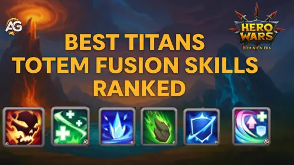
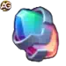
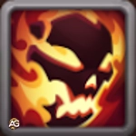
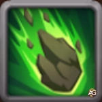

Ready to break the limits of elemental combat? The new Totem Fusion system in Hero Wars: Dominion Era lets you craft dynamic Titan strategies like never before!
Whether you're a seasoned Commander or just stepping into the Dominion, this guide reveals how to fuse powerful abilities into your Totems – giving your Titans the edge they need to dominate every battle.

Totem Fusion Guide - Hero Wars: Dominion Era, a game developed by Nexters.
What Is Totem Fusion?
Totem Fusion is a revolutionary feature in Hero Wars: Dominion Era that lets you enhance your Totems with two new types of skills – Elemental and Primal – in addition to the basic one. This update transforms static strategies into creative, tactical opportunities.
Elemental Skills give your Totem active combat abilities, allowing for game-changing effects like stunning enemies or enhancing elemental damage. Meanwhile, Primal Skills are passive enhancements that empower your allied Titans based on battle conditions, like increasing their attack power when healed.
With six Elemental and five Primal Skills available, all upgradable to level 5, Totem Fusion opens the door to unprecedented team customizations and advanced synergy strategies. It’s time to reimagine how you command your Titans.
Totem Skills – How Does Fusion Work?
Elemental Spirit Fusion
When fusing a Skill that your Totem already possesses, the odds of obtaining that same Skill again will increase, along with a greater chance of unlocking it at a higher level.
If two different Totems in your team share the same Skill, only one will activate during battle – the version with the highest level will take priority. Strategic planning is key to avoid redundancy and maximize team efficiency.
Skills behave differently depending on their type. Elemental Skills typically trigger globally without cooldown, unless otherwise stated. Primal Skills, on the other hand, activate under specific conditions and apply cooldowns individually for each Titan.
Once you initiate a Fusion attempt, the Catalyst used in the process will be consumed. If the resulting Skill doesn't match your strategy, don’t worry – you’ll have the option to reject the outcome and revert your Totem to its previous state.
Elemental Catalyst vs Primal Catalyst – What’s the Difference?
In Totem Fusion, there are two types of Catalysts, and each serves a specific purpose when adding skills to your Totems. Choosing the right one depends on the type of skill you want to unlock.
Elemental Catalysts are used when fusing active Elemental Skills that affect enemy Titans during battle. These abilities usually trigger automatically and can apply damage or crowd control effects.
Primal Catalysts are for fusing passive Primal Skills. These skills support your allied Titans, improving their performance based on battle conditions – like healing boosts, shields, or stat increases.
Below is a quick comparison of both types:
Type
Used For
Skill Effect
Elemental Catalyst
Elemental Skills
Active effects that trigger globally (e.g. stun, burn)

Primal Catalyst
Primal Skills
Passive effects triggered by ally conditions (e.g. healing, buffs)
How to Get Elemental Catalysts
Elemental Catalysts are key to unlocking active Elemental Skills through Totem Fusion. These powerful upgrades let your Totems unleash devastating effects during battle and they all start with the right resource.
To get Elemental Catalysts, you’ll need to exchange your extra Totem Fragments in the in-game Fusion interface. If you’ve been collecting fragments from events, chests, or bundles, this is your moment to put them to good use.
Just head to the Fusion menu, choose “Exchange,†and select how many fragments you want to convert. The more you exchange, the more Catalysts you’ll receive boosting your chances of unlocking high-rank Elemental Skills.
Tip: Save your fragments for when you have a target skill in mind, and don’t forget to use Catalysts in bulk to increase the power and rarity of the outcome!
How to Get Primal Catalysts
One of the most valuable ways to obtain Primal Catalysts is by deconstructing a Legendary Gift of Dominion. This rare item is usually used to upgrade all equipment of a hero to Orange rank a massive time-saver.
How to Get Primal Catalysts, Hero Wars Dominion Era.
However, with the arrival of Totem Fusion, the Legendary Gift has become even more important. You can now transform it into a Primal Catalyst, which is essential for fusing Primal Skills into your Totems.
If you already have a Legendary Gift of Dominion and don’t urgently need to upgrade a hero’s gear, consider using it for Totem Fusion. It gives you 135 Primal Catalyst units enough to significantly increase your odds of unlocking a high-level Primal Skill.
Tip: Legendary Gifts are rare and hard to find, usually appearing as top-tier rewards during limited-time events. Use them wisely!
Which Elemental Totem Skill Is Best for PvP?
Choosing the right Elemental Skill for your Totem can be the difference between victory and defeat in PvP. But with six powerful abilities, which one truly stands out? Let’s break it down in a simple and exciting way!
Best Elemental Totem Skills for PvP – Ranked and Explained
Want to dominate in Titan PvP fights? Your Totem’s Elemental Skill can give you the upper hand or hold you back if you choose wrong. Let’s break down each one in simple terms and reveal which are the true game-changers!
#1st Place:
Ice Age
Ice Age freezes all enemy Titans for 1 second when their Totem activates, and makes them take more damage for 5 seconds. This skill disrupts the enemy at the perfect time and opens a window for your team to strike hard. It’s the best choice for control-based PvP strategies.
#2nd Place:

Last Flash
Last Flash lets a Titan survive with 1 HP, gain invulnerability, and deal massive damage for 5 seconds. It can turn a losing fight into a surprise win especially if it triggers late in the battle. Perfect for clutch players!
#3rd Place:

Wrath of the Depths
Wrath of the Depths triggers when a Titan dies it turns into a stone and crashes down onto the enemy team, dealing area damage and stunning them. A powerful disruption move, though it only happens once per match.
#4th Place:
Murmur of the Crags
Murmur of the Crags creates a rocky shield that blocks damage and reflects double back. It's great for defense teams or long fights, especially in Guild Wars. But it lacks the aggressive punch of higher-ranked skills.
#5th Place:
Flame Dance
Flame Dance summons a fire vortex that deals high damage to multiple enemies. It’s flashy and fun, but since it lacks control or support effects, it can fall short in high-pressure PvP situations.
#6th Place:
The Depths Whisper
The Depths Whisper heals your Titans and deals mild AoE damage over 10 seconds. While helpful in long matches or PvE, it doesn’t provide the fast impact or disruption needed in most PvP fights.
In Summary: If you're focused on PvP dominance, go for Ice Age or Last Flash. They offer control and explosive power at the right moment. Use this ranking to pick the right strategy for your Titans and surprise your enemies with smart Totem choices!
Best Primal Totem Skills for PvP – Ranked and Explained
Picking the right Primal Totem Skill can help your Titans stay alive longer, hit harder, or resist powerful enemy attacks. But which one actually gives you the edge in PvP? Let’s go through each one step by step and find out!
#1st Place:
Triple Cycle
Triple Cycle is the most flexible and powerful Primal Skill for PvP. It reacts to whatever buff your Titan receives healing leads to more damage, buffs lead to shields, and shields lead to healing. That makes it perfect for any situation, giving your team constant support. Even new players benefit without needing to time anything manually!
#2nd Place:
Pulse of the Ancients
Pulse of the Ancients heals your Titans every time they use an ability simple, effective, and very reliable in long fights. The more your team uses skills, the more healing they receive. Perfect for tanky teams or healing-based strategies.
#3rd Place:
Echo Aegis
Echo Aegis gives your Titan a second shield after the first one breaks. This double-layer defense can be great against burst damage. While it depends on having shields in your team, it’s very useful in PvP builds that focus on protection and sustain.
#4th Place:
Call of Elements
Call of Elements boosts your Titan’s attack the more health it’s missing. It’s great for aggressive builds but also risky. You need to survive long enough at low health for this to pay off, which isn’t always possible in fast-paced PvP fights.
#5th Place:
Primal Zeal
Primal Zeal gives your Titan a 20% chance to restore energy when using their basic skill. While that sounds good, it’s random and less reliable in serious PvP. It’s better for PvE or as a backup option in longer fights.
In Summary:Triple Cycle is the clear PvP winner due to its versatility and auto-triggering synergy effects. Use this list to guide your Primal Skill upgrades based on your strategy whether you prefer balanced defense, smart healing, or aggressive offense!
❓ Totem Fusion FAQ
Q: If Totems can no longer be exchanged for Emeralds, will they become more accessible?
A: Yes! While Totems will remain one of the rarest and most valuable items, the game will offer more opportunities throughout the year including free ones to earn them.
Q: How can we get Catalysts besides dismantling Totems?
A: Catalysts will be offered as rewards in regular events some new, some familiar. At launch, players will receive a batch of both Elemental and Primal Catalysts so everyone can try out the new system!
Q: Can I fuse Skills into a Totem below level 130?
A: Absolutely. You can apply Catalysts to Totems starting at level 1.
Q: How can I test new fused skills?
A: The Fusion system will be available for testing in the Combat Training mode as soon as it launches.
Q: Can Totems below Absolute Star use Fusion?
A: Yes. Even a 1-star Totem can benefit from Fusion if you have enough Catalysts.
Q: Will I be able to exchange green, blue, violet, and yellow Dominion Gifts for Catalysts?
A: Yes. All types of Dominion Gifts can be exchanged for Primal Catalysts. The rarer the gift, the more Catalyst you’ll receive.
Q: Can I still gift Totems if all my Fusions are complete?
A: Yes, the gifting feature is not affected by Totem Fusion.
Q: Is there a pity system for unlucky Fusion attempts?
A: Yes. Each Catalyst use gives you “Catalyzed Power.†When you reach a certain amount, you can unlock the exact Skill and level you want guaranteed.
Conclusion
Totem Fusion is a bold step forward in Hero Wars: Dominion Era, giving players the tools to break free from predictable setups and craft custom, tactical builds. Whether you’re a veteran Titan commander or just diving into elemental battles, this new system gives you more power, more options, and way more fun.
From devastating active skills to smart passive synergies, Totem Fusion lets you express your playstyle and surprise your enemies. Combine the right Elemental and Primal abilities to create unstoppable teams and don’t forget to experiment. Sometimes, the craziest combos are the most powerful.
So gather your Catalysts, step into the Fusion chamber, and unleash your creativity. The battlefield will never be the same!
Alexandre Domingos holds a postgraduate degree in Engineering and works as a Production Supervisor. In his spare time, he explores the gaming world as a YouTuber and blogger at Alexandre Games, combining his passion for technology and strategy. He has been immersed in gaming since the age of 5, starting on classic platforms like MSX, Master System, Nintendo, and even an old 286 PC.
Video suggestion
Video: NEW TOTEM FUSION SYSTEM! | Complete Guide - Hero Wars: Dominion Era (PvP/PvE)
Did you like our Totem Fusion Skills Tier List & Guide for Hero Wars: Web and Facebook? Is there something you didn't understand or would like to suggest changes to? We invite you to join our comment section on the Alexandre Games Blog page. Feel free to express your opinion, clarify your doubts, and share your suggestions. Click the button below to get started:
 Elemental Catalyst
Elemental Catalyst


 in Hero Wars: Dominion Era") Best Totems Guide (How to Get Totems) in Hero Wars: Dominion Era
Best Totems Guide (How to Get Totems) in Hero Wars: Dominion Era


 Complete Pet Guide for Hero Wars: Dominion Era
Complete Pet Guide for Hero Wars: Dominion Era
 Hero Wars: Dominion Era Calendar
Hero Wars: Dominion Era Calendar Hero Wars: Dominion Era Tier List 2025 Best Heroes Ranked
Hero Wars: Dominion Era Tier List 2025 Best Heroes Ranked